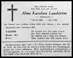

Alma Karolina Andersson
Blev 68 år.
| Född: | 1896-12-23 kbfd Arvidsjaurs fs, Arvidsjaurs sn. [1] | Nedkomstort: Gällivare kyrkby, Gällivare fs, Gällivare sn |
|---|
| Utflyttad till: | 1902-10-13 Jörn, Jörns fs, Jörns sn. [2] | |
|---|
| Utflyttad till: | 1923-02-09 Skellefteå sfs, Skellefteå sn. [3] | |
|---|
| Död: | 1965-01-29 Nygatan 62 B, Skellefteå, Sankt Olovs fs, Skellefteå kn. [4] | |
|---|
| Vigsel: | 1924-10-05 Jörns station, Jörns fs, Jörns sn. [5] | Snickaren Valfrid Lundström och Hemmadotterna Alma Karolina Andersson, båda Jörns station. Bådas muntliga samtycke. Försäkran från båda. |
|---|
Noteringar
Alma Karolina Andersson är dottersons sonsons dottersons dotterdotters dotter till Nicodemus Håkansson:
Håkansson, Nicodemus (1592? - 1668)
dotter: Nicodemidotter, Karin (1651 - 1723)
son: Johansson-Lutter, Nikodemus (>1673 - 1716?)
son: Nikodemusson, Nikodemus (1713 - 1782)
son: Nikodemusson-From, Olof (1739 - 1813)
dotter: Olofsdotter, Sara (1774 - 1864)
son: Johansson, Per (1802 - 1874)
dotter: Persdotter, Sara Carolina (1832 - 1912)
dotter: Edström Andersson Öberg, Klara Gustava (1873 - 1945)
dotter: Andersson, Alma Karolina (1896 - 1965)
Personhistoria
| Årtal | Ålder | Händelse |
|---|
| 1896 |
|
Födelse 1896-12-23 kbfd Arvidsjaurs fs, Arvidsjaurs sn [1] |
| 1899 |
2 år |
Maken Valfrid Lundström föds 1899-08-02 Frostkåge 10. Byske fs, Byske sn [6] |
| 1900 |
3 år |
Brodern Ernst Rudolf Andersson föds 1900-02-23 kbfd Arvidsjaurs fs, Arvidsjaurs sn [7] |
| 1902 |
5 år |
Utflyttad till 1902-10-13 Jörn, Jörns fs, Jörns sn [2] |
| 1923 |
26 år |
Utflyttad till 1923-02-09 Skellefteå sfs, Skellefteå sn [3] |
| 1924 |
27 år |
Vigsel Valfrid Lundström 1924-10-05 Jörns station, Jörns fs, Jörns sn [5] |
| 1925 |
28 år |
Sonen Tord Bruno Lundström föds 1925-07-16 Jörn, Jörns fs, Jörns sn [8] |
| 1945 |
48 år |
Modern Klara Gustava Edström Andersson Öberg dör 1945-03-12 Jörn, Jörns mcp, Jörns sn |
| 1947 |
50 år |
Fadern Sven August Andersson Öberg dör 1947-05-18 Jörn, Jörns mcp, Jörns sn |
| 1965 |
68 år |
Död 1965-01-29 Nygatan 62 B, Skellefteå, Sankt Olovs fs, Skellefteå kn [4] |
Källor
| [1] | Gällivare (BD) AIIa:1 (1895-1899) Bild 820 / sid 68, Jörn (AC) AIIa:6 (1918-1926) Bild 140 / sid 2 |
| |
| | |
| [2] | Gällivare (BD) AIIa:10 (1900-1905) Bild 1470 / sid 2340 |
| |
| | |
| [3] | Jörn (AC) AIIa:6 (1918-1926) Bild 140 / sid 2 |
| |
| | |
| [4] | DB / DOR 65 / UTD 61-67 |
| |
| | |
| [5] | Jörn (AC) EI:4 (1913-1941) 28/1924 Bild 770 / sid 72, AIIa:6 (1918-1926) Bild 2000 / sid 188 |
| |
| | |
| [6] | Byske (AC) AIIa:3 (1898-1904) Bild 3060 / sid 1101 |
| |
| | |
| [7] | Gällivare (BD) AIIa:1 (1895-1899) Bild 820 / sid 68 |
| |
| | |
| [8] | Jörn (AC) C:6 (1917-1930) 110/1925 Bild 2380 / sid 232, AIIa:6 (1918-1926) Bild 2000 / sid 188 |
| |
|
 |
1965-01-30. Alma Lundström f. Andersson.
Norra Västerbotten
|
| |
|  |
1965-02-02. Alma Lundström f. Andersson
Norra Västerbotten
|
|

{kind=link}